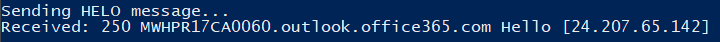
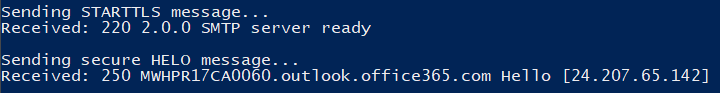
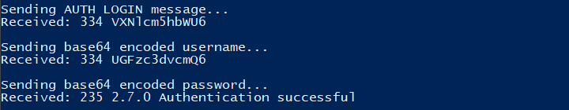

SMTP TLS CLIENT
 SOURCE CODE
SOURCE CODEProject Overview
The mail client I implemented utilizes TLS by doing the connection upgrade method. Such that we start with an insecure connection with our HELO message, then tell the server to use TLS with STARTTLS and then login with our credentials. This email client uses the SSLv23 protocol to communicate with the mail server.
Process
SOCKET CONNECTION
This project utilizes python's socket library so the program can set up a socket to both send and receive messages from a mail server. The socket will initially start with an insecure connection using TCP for its transport layer protocol.
SAYING HELO
After we have a TCP connection with the mail server, we will now start by saying "HELO" which is a message to kick off our SMTP connection. We expect at this point to receive a 250 response from the server with their own HELO message. This is to ensure both the client and server are able hear each other correctly.
SECURING THE CONNECTION
As mentioned before, our connection so far has only been insecure, so now we will wrap the socket utilizing python's SSL library. We first will send a new message to the server indicating we wish to upgrade our connection to a secure connection using the STARTTLS command. After receiving another 250 from the server we can wrap our socket and can also provide an SSL version as well as other information such as a certificate and key; however, for the purposes of this project we will only provide the protocol SSLv23 Lastly, in order to comply to the TLS protocol the server must forget everything about the initial insecure connection, and we must send our "HELO" again.
AUTH LOGIN
Now the connection is secure, we can safely send some more sensitive data. But, before we do that, we want to make sure we encode our username and password using a base64 format. I've seen some people use the base64 library for python, but you can just as well encode using base64 as well. We will send a command to indicate we are ready to login with "AUTH LOGIN". The server should then reply with a 334, and base64 encoded message "VXNlcm5hbWU6". This message is just the encoding of "Username:", which means we are ready to send our username to the server. The next 2 messages are just us sending our username and password in 2 separate messages encoded in base64.
TO AND FROM
We've successfully setup a secure connection and authenticated ourselves with the mail server, now all that's left is to send our message. So who are we sending it to? We have 2 messages we need to send which are "MAIL FROM" and "RCPT TO", which will allow the server to include a from email and send to the correct email address. Now you might be wondering "why do I need to provide a 'From' if I am logged in?", well that's called spoofing if you decide to use a different email address than your own. This doesn't mean the server will let you though, a lot of modern mail servers will prevent this behaviour (assuming they are doing their job right).
SENDING THE MESSAGE
Finally! Now we can send our message. We will start by telling the server we are sending data with the command "DATA". Then all the messages we send after this point will be appended in the body our message to the recipient. We can finish our message by sending message ending with a period wrapped in "\r\n" (ex: "\r\n.\r\n"). We should receive a 250 indicating the mail server has the message ready to send and is using SMTP to communicate with our recipient's mail server to send them the email. It is also good to end our connection by sending the mail server the "QUIT" command.